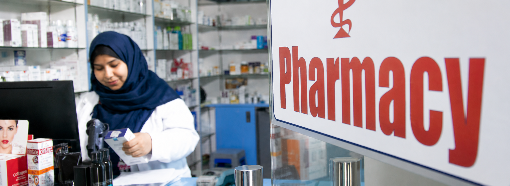

Patient access
Everything after the visit, kept close.
Appointments, reports, messages and aftercare details designed around your visit.
StatusReport readyGlobal Pathology
Next visitSkin consultationSaturday 10:30
MessageAftercare sentRead instructions
ProfileConsent activeSMS + email

Connected care
Clinic, lab and pharmacy working together.
Your next step should always feel clear.